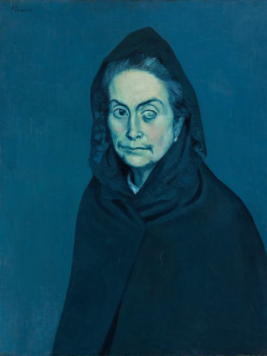
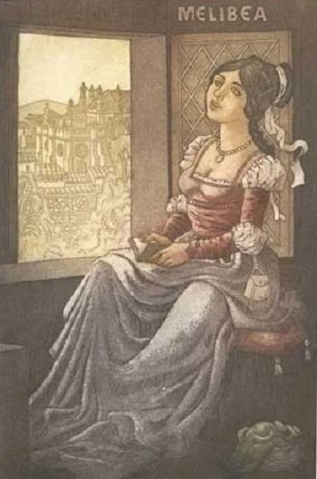
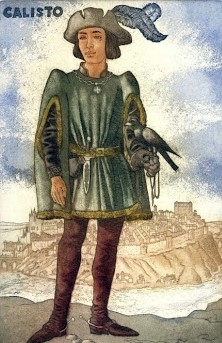
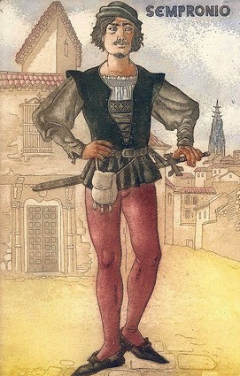
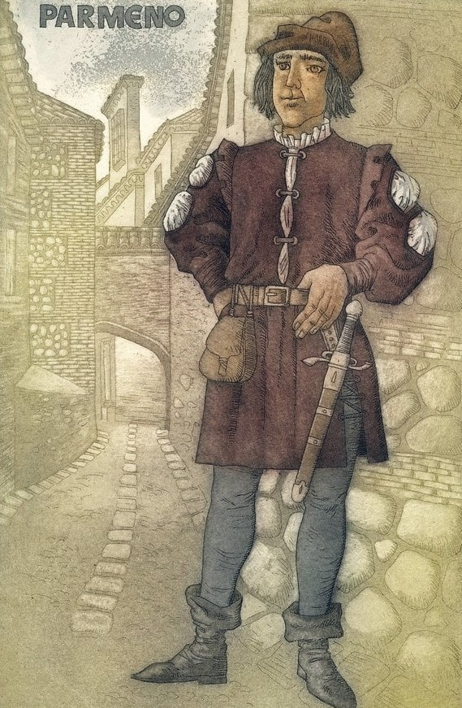

Los personajes de la Celestina
Las mujeres principales:

Celestina es la alcahueta de la historia y considerada protagonista de la obra, es una mujer inteligente que ha hecho su trabajo muchas veces con éxito. También es una bruja ya que puede estar en contacto con los diablos y sabe de sus magias y poderes. Pudo poder controlar a Melibea y se hace por extensión la nueva madre, pero no duro mucho ya que fue asesinada por Sempronio y Pármeno ya que querían la cadena.

Melibea se puede decir que es nuestra segunda protagonista ya que es de los primeros personajes que encontramos y de los últimos que vemos, mas es uno de los personajes que van por más cambio durante la obra, primero resistiendo la corrupción y después cayendo en ella. Es el objeto de obsesión de Calisto y puede considerarse la causa de que la obra pueda empezar ya que sin ella Calisto no hubiese tenido su obsesión. También es la causa de todas las muertes en la obra ya que Celestina muere por el trabajo que hizo, Sempronio y Pármeno mueren después de haber matado a Celestina por la cadena, Calisto muere cuando está visitando a ella y al fin ella se toma su propia vida, todos los que la quieren mueren en el final.
Los hombres secundarios:

Calisto es un egoísta que solo le importa a Melibea como un objeto no como una persona que amo, no es amor es codicia. Calisto nunca crece siempre es una persona descarada que solo le importa lo que él quiere y cuando escucha de Celestina inmediatamente quiere que ella lo ayude a obtener a Melibea. Eventualmente tiene su deseo y puede empezar a reunirse con Melibea, pero esto no dura por mucho ya que en unas de sus visitas tuvo un accidente y termino en las manos de la muerte.

Sempronio es un trabajador de Calisto, aliado a Celestina y amigo de las prostitutas ya que es el mismo que trae a Celestina a Calisto más es uno de los que corrompe a Pármeno y lo hace aliado de Celestina. Pero esto no dura ya que por su codicia se lleva a sí mismo y a Pármeno a la muerte después de haber fallido su asesinato de Celestina.

Pármeno se puede comparar a Melibea ya que ambos al principio tratan de hacer lo correcto evitando a Celestina y su influencia, pero ambos caen a la corrupción. Aunque Pármeno trata de avisar a Calisto del peligro de Celestina el no escucha y el mismo tampoco se escucha a sí mismo, terminando con el mismo destino de los demás y muriendo a causa de Celestina.